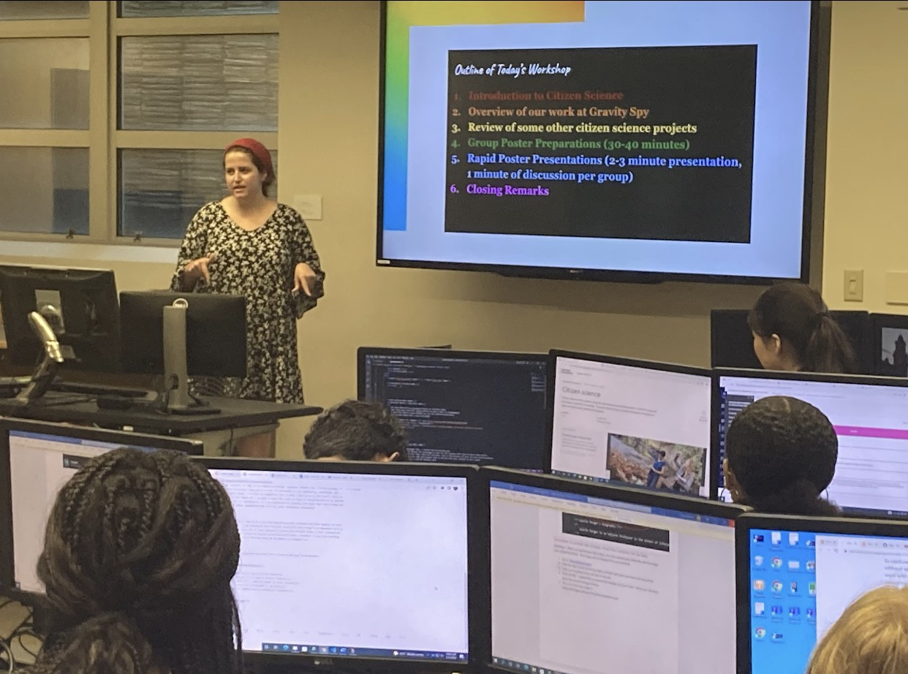

Zaria Lewis / July 21, 2022
The video below is a beginner's tutorial on how to use Photoshop. This video is very helpful without being too long. I hope you enjoy!
Zaria Lewis / July 19, 2022
LaNaia Jones is the chief information officer of the CIA as of this year. She was recently appointed to this position from her former position of being a Potomac Officers Club speaker. She is a veteran leader in the Information Community. She has a master’s degree in technology management and a bachelor’s degree in mathematics and computer science from the University of Maryland. Jones' contributions are not only important to the STEM community, but also to the many underrepresented women of color in the field.
Zaria Lewis / July 19, 2022
During today's class, we learned about teachable machines and created our own with a partner. I worked with Maddie and created a teachable machine that would recognize our faces and when nobody was there. Our idea behind it was that it could be used for opening doors on campus when the machine recognized a student standing in front of it.
Our teachable machine is linked below:
Zaria Lewis / July 20, 2022
During today's class, we went on a scavenger hunt to see how the employees of Syracuse University use technology and data. We were split into groups and I worked with Maddie and Christian. One of the departments we interviewed was Career Services. Here we learned that in order to help the students of Syracuse University find jobs and internships, they use data to see what areas tend to hire SU students the most. They also used technology to schedule meetings for students, and this was especially used during the pandemic.

Zaria Lewis / July 21,2022
AWS is described as being "...the world's most comprehensive and broadly adopted cloub platform..." This offers many services from data centers around the world. Most people use the cloud at least once a day without even realizing it. AWS can be used for social networking, tv streaming services, mobile apps, and many other websites.
